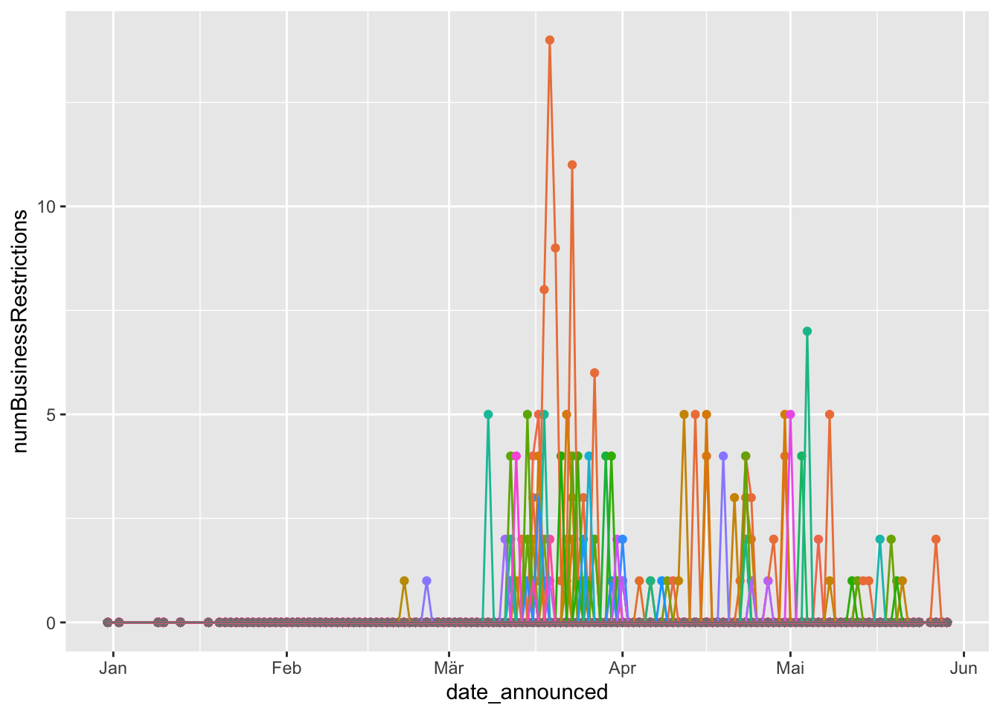
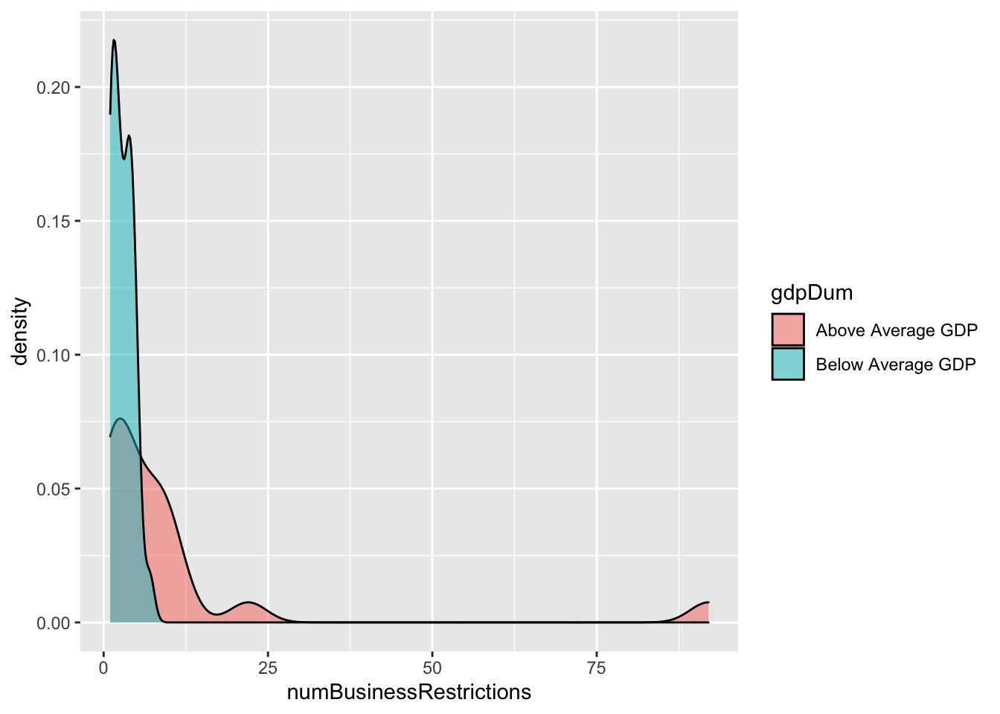

CoronaNet Example
Download the script here
1 Set up
rm(list=ls())
library(readr)
library(tidyverse)2 Loading the dataset & do previous data management
coronaNet <- read_csv("data/coronanet_release.csv")
wb <- read_csv("data/API_NY.GDP.PCAP.PP.CD_DS2_en_csv_v2_988619.csv", skip = 4)
businessRestrict = coronaNet %>% filter(type %in% c("Restriction and Regulation of Businesses" ,"Restriction of Non-Essential Businesses"))
wb = wb %>% gather("year", "gdpPPP", -`Country Name`, -`Country Code`, -`Indicator Name`, -`Indicator Code`, -X65)
wb = wb %>% select( -`Indicator Name`, -`Indicator Code`, -X65)
wb$year = as.numeric(wb$year)
wb$lgdpPPP= log(wb$gdpPPP)
data = merge(businessRestrict, wb %>% filter(year == 2018), by.x = 'ISO_A3', by.y = "Country Code", all.x = TRUE)
dataAgg = data %>%
group_by(country) %>%
summarise(numBusinessRestrictions = n(),
gdpPPP = mean(gdpPPP))
dataAgg$gdpDum = ifelse(dataAgg$gdpPPP > mean(dataAgg$gdpPPP, na.rm = TRUE), "Above Average GDP", "Below Average GDP")
dataAgg = dataAgg %>% filter(!is.na(gdpDum))3 Creating a Plot
businessRestrictAgg = businessRestrict %>%
group_by(date_announced, country) %>%
summarise(numBusinessRestrictions = n())
dframe = expand.grid(unique(coronaNet$date_announced), unique(coronaNet$country))
names(dframe) = c('date_announced', 'country')
businessRestrictFull = merge(dframe, businessRestrictAgg, by = c('date_announced', 'country'), all.x = TRUE)
businessRestrictFull$numBusinessRestrictions = ifelse(is.na(businessRestrictFull$numBusinessRestrictions), 0, businessRestrictFull$numBusinessRestrictions)
# lets plot business restrictions over time
ggplot(data = businessRestrictFull) +
geom_point(aes(x = date_announced, y = numBusinessRestrictions ))# hmmm, how can we distinguish by country?
ggplot(data =businessRestrictFull) +
geom_point(aes(x = date_announced, y = numBusinessRestrictions, color = country)) +
theme(legend.position = "none")ggplot(data = businessRestrictFull) +
geom_point(aes(x = date_announced, y = numBusinessRestrictions, shape = country)) +
theme(legend.position = "none")ggplot(data = businessRestrictFull) +
geom_point(aes(x = date_announced, y = numBusinessRestrictions, size = country)) +
theme(legend.position = "none")ggplot(data = businessRestrictFull) +
geom_point(aes(x = date_announced, y = numBusinessRestrictions, alpha = country)) +
theme(legend.position = "none")
# what happens if we try to connect the dots?
ggplot(data = businessRestrictFull) +
geom_point(aes(x = date_announced, y = numBusinessRestrictions, color = country)) +
geom_line(aes(x = date_announced, y = numBusinessRestrictions, color = country)) +
theme(legend.position = "none")
ggplot(data = businessRestrictFull %>% filter(country %in% c('China', 'Germany'))) +
geom_line(aes(x = date_announced, y = numBusinessRestrictions, color = country)) +
theme(legend.position = "none")3.1 Change asthetics
ggplot(data = businessRestrictFull) +
geom_point(aes(x = date_announced, y = numBusinessRestrictions, color = 'red'))+
theme(legend.position= 'none')ggplot(data = businessRestrictFull) +
geom_point(aes(x = date_announced, y = numBusinessRestrictions, size = 15) )3.2 Facets
# If you want to look at each country individually, you can split your plot into facets
ggplot(data = businessRestrictFull%>% filter(country %in% c('China', 'Germany'))) +
geom_point(aes(x = date_announced, y = numBusinessRestrictions))+
facet_wrap(~country, nrow = 2)3.3 Geom Smooth
# Lets plot the smoothed out data
ggplot(data = businessRestrictFull%>% filter(country %in% c('China', 'Germany'))) +
geom_smooth(aes(x = date_announced, y = numBusinessRestrictions))## `geom_smooth()` using method = 'loess' and formula 'y ~ x'# We can layer different geoms on top of each other!
ggplot(data = businessRestrictFull%>% filter(country %in% c('China', 'Germany'))) +
geom_point(aes(x = date_announced, y = numBusinessRestrictions, color = country))+
geom_smooth(aes(x = date_announced, y = numBusinessRestrictions, linetype = country))## `geom_smooth()` using method = 'loess' and formula 'y ~ x'
# Note geom_smooth is a predicted line, to plot the line that goes through the actual points, use geom_line
ggplot(data = businessRestrictFull%>% filter(country %in% c('China', 'Germany'))) +
geom_line(aes(x = date_announced, y = numBusinessRestrictions, linetype = country)) +
geom_point(aes(x = date_announced, y = numBusinessRestrictions,color = country)) +
geom_smooth(aes(x = date_announced, y = numBusinessRestrictions, linetype = country)) ## `geom_smooth()` using method = 'loess' and formula 'y ~ x'4 Density Plots
# how about plotting density plot?
dataAgg$gdpDum = ifelse(dataAgg$gdpPPP > mean(dataAgg$gdpPPP, na.rm = TRUE), "Above Average GDP", "Below Average GDP")
dataAgg = dataAgg %>% filter(!is.na(gdpDum))
ggplot(data = dataAgg, aes(x = numBusinessRestrictions, fill = gdpDum))+
geom_density(alpha = .5)
# ----------- In order to make plots understandable to others, it would be helpful to have useful labels on the plots
#http://r4ds.had.co.nz/graphics-for-communication.html
ggplot(data = dataAgg, aes(x = numBusinessRestrictions, fill = gdpDum))+
geom_density(alpha = .5)+
labs(title = "Are countries more or less likely to put restriction on businesses of they have above average vs. below average GDP",
y = 'Density',
x = 'Number of Policies Which Have Put Restrictions on Businesses')+
theme_minimal()+
theme(legend.position = 'bottom',
legend.title = element_blank())